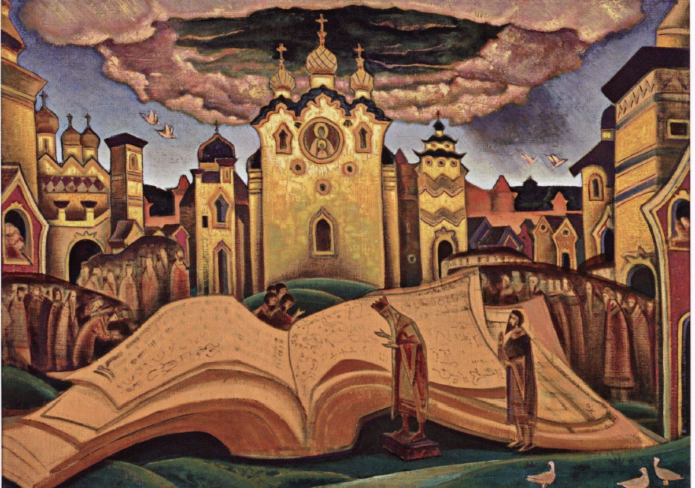

Фон — Н. К. Рерих, «Голубиная книга», 1922 (Государственный музей Востока).
Жанр и происхождение
Народная Библия неграмотной Руси
Духовный стих — эпическая песня на религиозный сюжет, которую пели вне храма: калики перехожие, слепцы, паломники, позже — сказители Севера.
Сюжеты из Писания и апокрифов, а язык и напев — былинные.
«Голубиная книга» — самый распространённый из них: более 20 вариантов в записях XIX в.
Сложение — кон. XV — нач. XVI в., Псково-Новгородские земли; первая запись — сборник Кирши Данилова (сер. XVIII в.).
Источники: апокрифы «Беседа трёх святителей», «Вопросы Иоанна Богослова на горе Фаворской»; образ небесной книги — Апокалипсис, гл. 5.
«Голубиная» или «глубинная»? Вероятно, от «глубины премудрости»: ещё св. Авраамия Смоленского обвиняли в чтении «глубинных книг». Народ переосмыслил слово через голубя — символ Святого Духа.
Федотов Г. П. Стихи духовные. Париж, 1935; Бессонов П. А. Калеки перехожие. М., 1861–1864; Никитина С. Е. Голубиная книга // Православная энциклопедия. Т. 12.
Ключевое: духовный стих — не церковное песнопение. Это народная переработка книжных апокрифов в форме вопросов и ответов.
Голос XIX века
Ирина Федосова
И. А. Федосова (1827–1899)
Великая заонежская вопленица из д. Кузаранда; знала десятки тысяч стихов.
Впервые записана Е. В. Барсовым в 1867 г. («Причитанья Северного края»).
В январе 1896 г. в Москве Юлий Блок записал её на фонограф: 19 стихов «Голубиной книги».
Каждый раз пела иначе: у Барсова — 45 стихов, у Агреневой-Славянской — 129.
Что в осьмомъ году, осьмой тысяче,
Восьмой тысяче, да марте месяце,
Восьмой тысяче, марте месяце,
Наставала тученька темная,
Наставала тученька темная,
Ай, темна — грозна да страховитая,
Ай, темна — грозна, страховитая,
Со громомъ туча́ да со молниёй,
Со громомъ туча́ да со молниёй,
На тую пору да на Фавор гору,
Как на тую пору да на Фавор гору,
Ко тому кресту да ко Господънему,
Ко тому кресту ко Господнему
Ко тыимъ мощам да ко Адамовым,
Ко тыимъ мощам ко Адамовым, Выпадала Книга Голубиная, Выпадала Книга Голубиная…
Кузнецова В. П. И. А. Федосова и её духовные стихи // Рябининские чтения — 2015. Петрозаводск: Музей-заповедник «Кижи», 2015.
Включить запись. Зачин «в осьмом году, осьмой тысяче» — 7008 год от сотворения мира, т. е. 1500-й, год ожидания конца света. Повторы строк — черта живого пения.
Завязка
Книга из тёмной тучи
Восходила туча сильна, грозная,
Выпадала книга Голубиная…
Никто ко книге не приступится…
Приходил ко книге премудрый царь,
Премудрый царь Давыд Евсеевич…
«Писал сию книгу сам Исус Христос…
Читал сию книгу сам Исай-пророк,
Читал он книгу ровно три года,
Прочитал из книги ровно три листа».
Оксенов А. В. Народная поэзия. СПб., 1908
Книга огромна — «в долину сорока пядей». Сходятся сорок царей, сорок князей, сорок калик, но открыть её может лишь Давид, да и он «прочесть не может», а пересказывает «по старой памяти».
Н. К. Рерих. Ранний вариант «Голубиной книги», 1911. Смоленский музей-заповедник
Божественное знание непостижимо разумом: пророк за три года прочёл три листа. Передаётся оно не чтением, а памятью — как и сам стих.
Устройство мира
Мир — из Бога, человек — из мира
А и белой свет — от лица божья,
Со(л)нцо праведно — от очей его,
Светел месяц — от темичка,
Темная ночь — от затылечка,
Заря утрення и вечерняя — от бровей божьих,
Часты звезды — от кудрей божьих!
Сборник Кирши Данилова, сер. XVIII в. · в редакции 1908 г. добавлены: ветры — от Свята Духа, дождик — от слёз Христа
Наши помыслы — от облац небесныих,
Кости крепкие — от камени,
Телеса наши — от сырой земли,
Кровь-руда наша — от черна моря.
От того у нас в земле цари пошли:
От святой главы от Адамовой…
От того крестьяны православные:
От свята колена от Адамова.
Оксенов, 1908
Не творение «из ничего», а исхождение: мир — отблеск Бога, тело человека собрано из стихий мира. Две зеркальные цепи соответствий — макрокосм и микрокосм. Отсюда же выводится и сословный порядок.
Топоров В. Н. Голубиная книга // Мифы народов мира. Т. 1. М., 1980; Кирша Данилов. Древние российские стихотворения. М., 1977.
В разных вариантах части тела меняются (солнце — то от лица, то от очей). Устойчив сам принцип, а не деталь.
Диалог
Волотоман и Давыд
Волотоман Волотоманович спрашивает — имя от «волот», великан. В вариантах он же Володимир или Малодумар, «малодумный» против премудрого.
Давыд Евсеевич — библейский царь, автор Псалтыри, отвечает по памяти.
Форма «вопрос — ответ» унаследована от апокрифической «Беседы трёх святителей». Сначала спрашивают о происхождении мира, затем — о том, что в мире главное.
Который царь над царями царь?
Кая земля всем землям мати?
Кое древо всем древам мати? ответ: «У нас Белый царь — над царями царь… Святая Русь-земля всем землям мати»

Н. К. Рерих. «Голубиная книга», 1922. Государственный музей Востока, Москва
Переход к залу: «Давайте ответим на три вопроса Волотомана сами». На картине книга раскинута как крылья птицы — отсылка к «голубиному» имени.
Вопрос Волотомана
Который город городам отец?
Иерусалим
Не столица и не самый большой город, а середина земли: под алтарём храма Воскресения, по преданию, лежит «пуп земли».
Иерусалим-город городам отец.
Почему тот город городам отец?
Потому Иерусалим городам отец:
Во тем во граде во Иерусалиме Тут у нас среда земле.Оксенов, 1908
Дать залу 10–15 секунд, затем нажать → для ответа.
Вопрос Волотомана
Кая рыба всем рыбам мати?
Кит-рыба
На ней держится земля. Число китов в вариантах разное — три, семь, тридцать; образ пришёл прямо из «Беседы трёх святителей».
Кит-рыба всем рыбам мати… На трех рыбах земля основана.
Стоит кит-рыба — не сворохнется;
Когда ж кит-рыба поворотится,
Тогда мать-земля восколыбнется, Тогда белый свет наш покончится.Оксенов, 1908 · у Кирши Данилова — «на семи китах земля основана»
Запомнить кита: на слайде о духоборах он окажется символом государства.
Вопрос Волотомана
Кая гора всем горам мати?
Фавор
Гора Преображения — и та самая, на которую у Федосовой падает книга. У Кирши Данилова ответ другой: «Сионская гора — всем горам мати». Кто сказал «Сион» — тоже прав.
Фавор-гора всем горам мати.
Почему Фавор-гора горам мати? Преобразился на ней сам Исус Христос,
Исус Христос, Царь Небесный, свет,
С Петром, со Иоанном, со Иаковом…
Показал славу ученикам своим.
Оксенов, 1908
Связать с записью Федосовой, которую слушали: «на тую пору да на Фавор гору… выпадала Книга Голубиная».
Символика
Порядок вещей целиком
город
Иерусалим
«тут у нас среда земле»
река
Иордан
в ней крестился Христос
гора
Фавор
место Преображения
камень
Алатырь
на нём Христос «распущал книгу Голубиную»
древо
Кипарис
из него — крест Распятия
трава
Плакун
выросла из слёз Богородицы
птица
Стратим
вострепенётся — море всколыхнётся
зверь
Индрик
ходит под землёй, прочищает ключи
Мир размечен святыней: у каждого рода вещей есть своя «мать», и каждая обоснована евангельским или апокрифическим событием. Алатырь, по А. Н. Веселовскому, — алтарный камень Сионской церкви, где впервые принесена бескровная жертва; в заговорах это «бел-горюч камень», центр мира, на котором и написана сама книга.
Веселовский А. Н. Разыскания в области русского духовного стиха. СПб., 1879–1891; ЭСБЕ, ст. «Голубиная книга».
Философский смысл
Правда и Кривда
Это Кривда с Правдой соходилися,
Промежду собой бились-дрались,
Кривда Правду одолеть хочет… Правда пошла на небеса
К самому Христу, Царю Небесному; А Кривда пошла у нас вся по всей земле…
От Кривды стал народ неправильный…
Оксенов, 1908
Финал стиха: Волотоману снятся два бьющихся зверя. Давыд толкует сон как битву Правды и Кривды.
Мир устроен свято — но Правда ушла с земли. Отсюда трагизм народного мировоззрения.
Для Г. П. Федотова это «основной опыт социальной философии народа».
Влияние: Буслаев и Веселовский, Рерих, Ремизов, русский символизм.
Федотов Г. П. Стихи духовные. М., 1991; символ зайца-правды восходит к «Беседе трёх святителей».
Живая традиция
Голубиная книга у духоборов
Духоборы отвергали писаное Писание; их «Библия» — устная «Животная книга» псалмов, заучиваемых с детства.
Сокращённый стих стал у них богослужебным псалмом № 89 «Царь Давыд Осеевич». Записан В. Д. Бонч-Бруевичем в Канаде (1909); ещё в 1857 г. — в Воронежской губернии.
Псалом имеет «два смысла»: за буквой скрыто иносказание — космология превращается в социальную критику.
…у меня есть книга голубиная… белый свет от сердца Господнего, красно солнце от лица Его…
Псалом 89
Кит-рыба — это земные державцы. Они своими узаконениями… удерживают народ в темномрачном основании. Плакун-трава — …чады, которые нарождены от Господа… идут напротив власти.
«Разъяснение» духоборца П. В. Батурина
Животная книга духоборцев / Под ред. В. Д. Бонч-Бруевича. СПб., 1909. С. 108–110.
Кит, на котором стоит земля, — государство, держащее народ во тьме. Тот самый кит из вопроса про рыбу.
Сегодня
Перепев Александра Маточкина
Сказитель и этнический певец; в репертуаре более 70 старин — былины, баллады, духовные стихи.
Работает с изданиями XIX в. и собственными полевыми записями на северных реках.
Свёл 10 вариантов стиха из петрозаводского собрания в единый текст около 350 строк и издал его рукописной книгой «Северная старина. Голубиная книга».
Послушайте у него целиком: тот же сюжет, что в записи Федосовой, но не обрывок фонографа, а полная «старина» — так стих и звучал в живом исполнении.